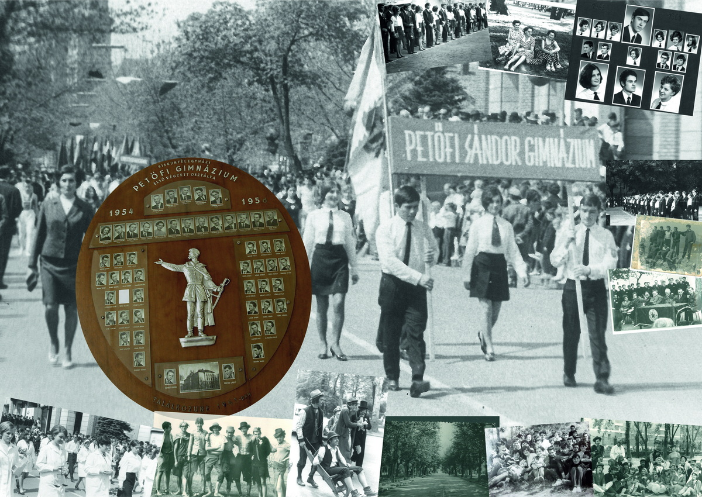

A változó oktatási irányelvekhez, igényekhez igazodva a Testnevelési Gimnázium sporttagozatos képzése mellett – azt fokozatosan kivezetendő – 1954‑ben általános gimnáziummá alakul át az intézmény Dr. Mezősi Károly igazgatásával, akit 1958‑ban Harsányi Lajos követ az igazgatói székben. 1956. június 16-án az iskola felveszi városunk meghatározó alakjának – Petőfi Sándornak – a nevét. „Új színt hoz az iskola életében a politechnikai képzés bevezetése. Az 1958/59-es tanévben az 5+1 képzés előkészítéseként szakköri foglalkozás keretében indul meg a zöldségtermesztési ismeretek elsajátítása. A következő tanévtől már rendes tanórai keretben folyik az oktatás: az elsőkben heti 6 órában, a másodikban heti 2 órában. (…) A kiépült gimnázium tovább folytatja az útkeresést. Először 2-2 osztállyal humán- és reál tagozatú képzés folyik, egynemű fiúosztályokkal. Az 1963/64-es tanévtől a fiúiskola zárt társadalmában megjelennek a lányok is, velük új színfolt, új stílus alakul. (…) Az 1964/65-ös tanévtől egy-egy biológia-kémia tagozatos C. osztály indul. Az első osztályt Sallai Sándor indítja, a kémiát Berkes Dezsőné, később Bodor Jánosné, Szolnoky Jenő és Barkóczi Mária viszi tovább. Az utolsó két osztály a közben meginduló szakközépiskolai képzés miatt átkerül a Móra Ferenc Gimnáziumba. A változás hatása jelentős a tantestületben is: kiváló tanárok mennek át a gimnáziumba: Vass Albin „matematikus” és a biológia‑kémia „nagymesterei”: a Szolnoky házaspár. Közben az iskolavezetésben is sűrűsödnek a változások: 1966 őszétől Kerekes Imre, 1969 őszétől Kovács Sándor kerül az intézmény élére. A belső változások az iskola képét is átalakítják. Fehér köpenyes lányok, fiúk, sürgölődnek a kék köpenyesek közt, békák, nyulak várakoznak a boncolási gyakorlatokra. Élő-folyosó alakul a biológia-kémia birodalmában, akváriumok, terráriumok‑élővilága tanítja és gyönyörködteti a tanulókat. Az iskola egyre újabb lehetőségeket teremt az ismeretszerzésre: rendkívüli tárgyként tanulhatnak művészettörténetet, zenei alkotások ismeretét, hangszeres zenét és a műszaki rajz alapjaival is megismerkedhetnek. A kötelezően tanított orosz nyelv mellett a második idegen nyelv kötelező tanítása is megindul. Egy-egy osztályon belül csoportbontásban tanulhatnak latint, németet, olaszt és franciát. Az iskola által nyújtott lehetőségek meg is hozzák eredményüket: A városi, megyei és országos versenyeken egyre többször kerülnek fel PG-s tanulók nevei az elsők közé, különösképpen orosz nyelvből, biológia-kémiából, történelemből, matematikából, de ragyogó eredmények születnek majdnem minden tárgyból. A tanulók pályaválasztása is mutatja a változásokat: a biológia-kémia tagozatos osztályokból zömmel orvosok, vegyészek, biológusok, laboránsok és más egészségügyi dolgozók kerülnek ki. A sikeres idegen nyelvi ismeretszerzés megnöveli a közgazdasági pályára készülők lehetőségeit, de nő a jogász és a tanári pálya iránti érdeklődés is.” Ezen időszaknak – amikor az iskola felvette Petőfi Sándor nevét – egy fontos öröksége, ami több évtizede „beleégett” az itt tanulók és a környékben élők szívébe: a PG kifejezés, amit mind a mai napig büszkén használunk, amikor az iskoláról beszélünk.